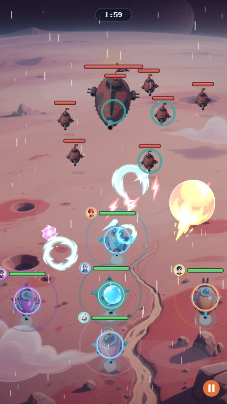
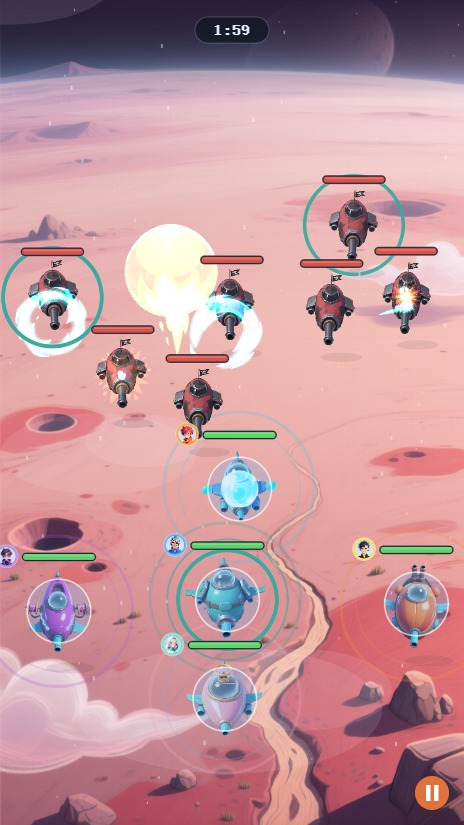
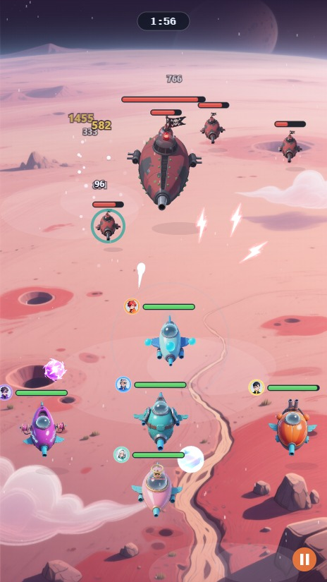
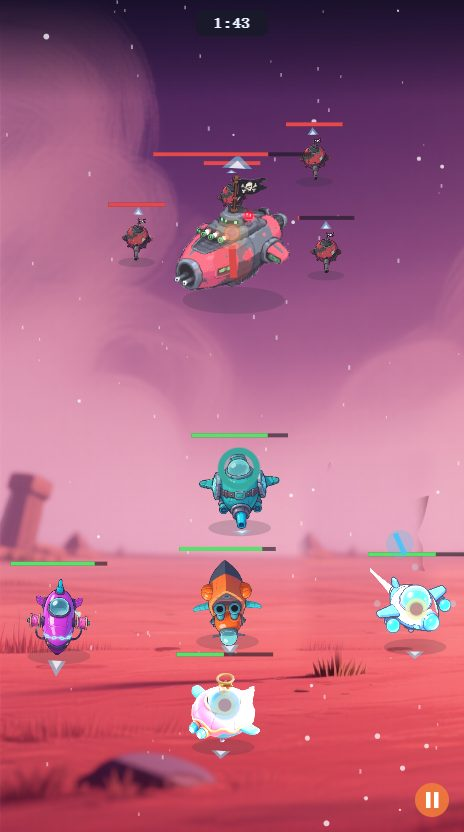
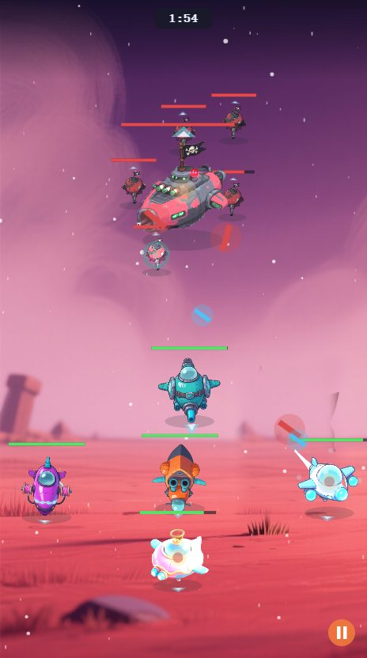

战斗画面磨精 · 批次快照对比档（Ron 07-15 令立 · 每批收口存一张 · 新批在上）
用法：新批做完 → 快照存本目录（编号-日期-批名.jpg）→ 本页顶部加一块。上下滚动即可对比历批变化；同屏横比可开两个窗口。
05 · 07-15 磨精批2 —— 暗角聚光（边缘压暗=战斗区聚焦）+ 活感四件（引擎辉光呼吸/巡航倾斜/灯点眨眼/受击惯性）+ 施法环降噪

04 · 07-15 磨精批1 —— 构图收拢（敌阵下压0.09收对峙带）+ 糖果凝胶两钮收角 + 播放期藏DEV键

03 · 07-15 四小修 —— 顶部倒计时 + 入场仪式（我方滑入/HUD后亮/敌阵预列阵）+ 我方下移0.07 + 血条头像重画

02 · 07-14 V字编队定案 —— 三排编队+V字微弯（Cocos壳前·组装v8期）

01 · 07-14 阵型三调与活感 —— 楔形阵首版+切件动骨四件（组装v8期基线）
